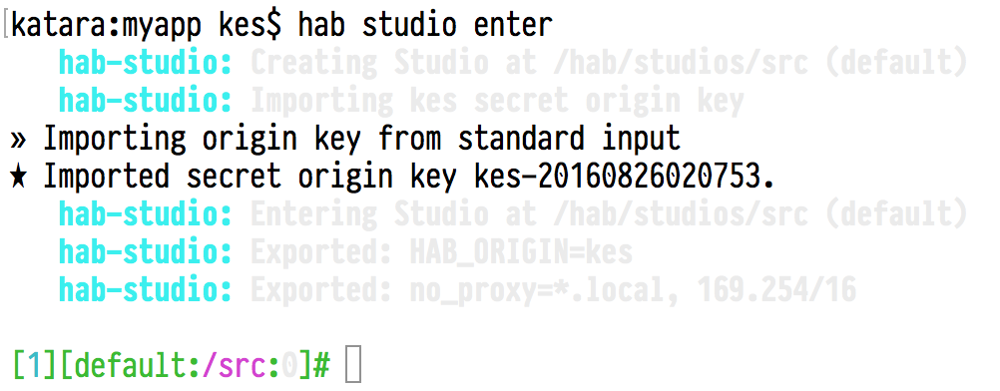

Kyle Sexton
Senior DevOps Engineer
New Context
If you look on the web, you'll find descriptions like:
Application automation that enables modern application teams to build, deploy, and manage any application in any environment
When I started looking at Habitat I would read things like that and have no idea what they were talking about.
I started digging deeper.
The first thing I did was build out a small Habitat cluster so I could learn by experimenting. It didn't help.
Habitat didn't make sense to me until I realized the following:
The infrastructure is not the point.
Habitat is not built to replace your existing environment.
Let's try this again.
Habitat is a framework for creating modern, portable applications.
Rails gave ruby developers an easy framework for web development, Habitat gives developers a framework to build modern, run anywhere applications.
So if you've bought in to my mental model of how to view Habitat, what benefits does this framework provide?
All Habitat packages come with a supervisor. The supervisor starts and monitors the application defined in the package as well as acting on configuration changes.
Running services can be connected into groups that can self-manage and reorganize as changes occur.
Built in cluster strategies such as leader-follower allow you to start your services to match their topology
Communications to and between services are secured with high-grade encryption using libsodium, a Rust implementation of NaCl.
(Curve25519, Salsa20, and Poly1305 ciphers - https://nacl.cr.yp.to)
Robust HTTP API provides essential information about the status of the application.
| /census | Information about the census |
| /config | Current running configuration |
| /election | Leader election status |
| /gossip | Gossip ring information |
| /health | Runs the package's health_check |
| /status | Returns the current status from the supervisor's perspective |
Health checks that are bundled with the application and created by the application developers!
No more having the ops team guess the best way to check an application's health!
$ curl -s -L http://localhost:9631/health | head -1 OK - kes/mytutorialapp/0.2.0/20160826033838: up for PT85.912594176S $
With habitat you get Hab Studio, a chrooted environment that isolates builds from your operating system libraries and dependencies

Habitat has a standard package format that is isolated, immutable, and auditable.
Artifacts are fully capable of being run on their own, or can be exported to multiple formats, like Docker, Mesos.
Start simple – just launch an app, but as you need more features you have them available.
Don't want a feature? Just don't pass the switches to enable them.
The website has a great interactive overview of Habitat that you can try from the comfort of your browser.
Resources: